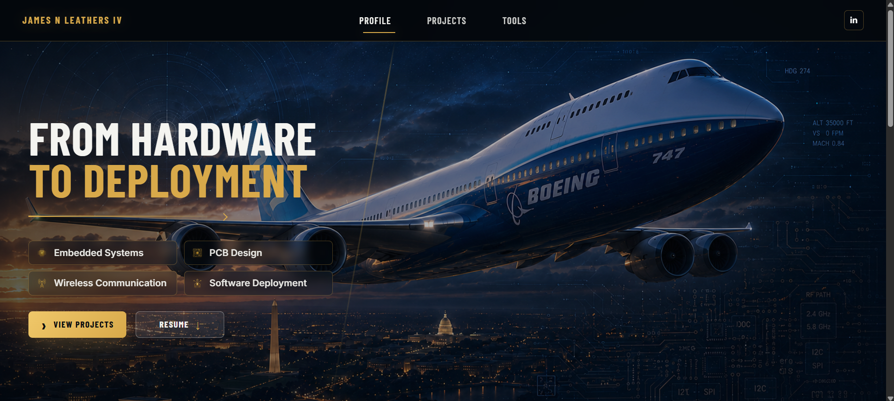

Stand out quickly
Recruiters and engineers should understand the technical identity of the site within the first few seconds.
Custom dark-mode engineering portfolio built to present technical projects, systems thinking, and professional credibility through a focused aerospace-inspired visual language.

This portfolio website is designed as a professional engineering artifact rather than a generic resume page. The goal is to show projects through a systems-first lens: what problem was solved, how the system was structured, what tools were used, and how the work was verified.
The site combines a dark-mode Boeing/Purdue-inspired visual identity with concise technical storytelling. The homepage acts as a high-level portfolio, while the project pages provide deeper breakdowns for individual systems.
A resume can list projects, but it does not show how a system works or how engineering decisions were made. A portfolio needs to make technical ability visible without overwhelming the viewer.
Recruiters and engineers should understand the technical identity of the site within the first few seconds.
Project cards need to lead into deeper breakdowns instead of functioning as static thumbnails.
The homepage needs to summarize education, experience, tools, and projects without becoming a wall of text.
The website is structured as a static frontend with reusable sections and standalone project pages. Each project page uses the same tabbed breakdown format so visitors can quickly compare systems without relearning the page layout.
Homepage: presents personal positioning, profile, featured projects, and platforms/tools.
Project cards: act as navigation points into deeper engineering breakdowns.
Project pages: use consistent tabs for overview, architecture, implementation, verification, and lessons learned.
Semantic page structure for the homepage, navigation, project cards, and project detail pages.
Dark-mode styling, responsive layout, card system, hero sections, and portfolio visual identity.
Tab switching behavior for project pages and lightweight interactive functionality.
Used as an AI-assisted design and implementation partner for layout iteration, copy refinement, and page structure.
Used for concept imagery and project cover visuals where appropriate.
Planned repository and static-site deployment workflow for version control and public hosting.
I defined the site goals, selected the content structure, reviewed each visual direction, provided project information, corrected technical inaccuracies, and iteratively refined the design until it matched the professional positioning I wanted.
Shifted the site away from a resume dump and toward a systems-first engineering portfolio.
Created the hero, profile, project cards, tool grid, and footer with a dark aerospace-inspired theme.
Implemented reusable project page tabs for overview, architecture, stack, role, implementation, verification, and lessons learned.
Adjusted typography, spacing, button hierarchy, images, project tags, and section flow based on review.
Verification focused on confirming that the site communicates clearly, navigates correctly, and presents projects in a professional way.
Verified top navigation anchors and project card links point to the correct sections or pages.
Checked spacing, text hierarchy, button clarity, image cropping, and section balance through repeated screenshot review.
Reviewed project descriptions to avoid overstating work and to keep technical descriptions aligned with the actual systems.
Used flexible grids and media queries so the site can collapse more cleanly on smaller screens.
This project showed that a portfolio is not just a design task. It is a technical communication problem: the site needs to help a viewer understand what was built, why it matters, and how the work was approached.
Short, structured project summaries are more effective than trying to fit a full resume onto the homepage.
A consistent breakdown format makes it easier for viewers to evaluate different projects quickly.
Visuals only work when the architecture and terminology are technically accurate.